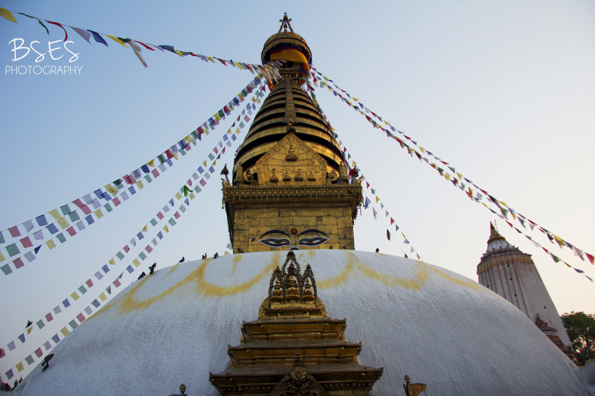

Kathmandu is the capital city of Nepal. You can explore thousands of years of culture here, while making your way through historic temples and monasteries that belong to Hindus and Buddhists alike.Historically, the Kathmandu Valley and adjoining areas were known as Nepal Mandala. Until the 15th century, Bhaktapur was its capital when two other capitals, Kathmandu and Lalitpur, were established. During the Rana and Shah eras, British historians called the valley itself "Nepal Proper". Today, Kathmandu is not only the capital of the Federal Democratic Republic of Nepal, but also the headquarters of the Central Development Region of Nepal. The Central Region comprises three zones: Bagmati, Narayani, and Janakpur. Kathmandu is located in the Bagmati Zone.
Kathmandu is the gateway to tourism in Nepal. It is also the nerve center of the country's economy. It has the most advanced infrastructure of any urban area in Nepal, and its economy is focused on tourism.
There is no better way to understand Nepal and Nepali people, than through their cuisine. Nepal does not have one distinct cooking style. However, food habits differ depending on the region. Nepali food has been influenced by Indian and Tibetan styles of cooking. Authentic Nepali taste is found in Newari and Thakali cuisines which are available in a large number of eateries spread all over the valley.